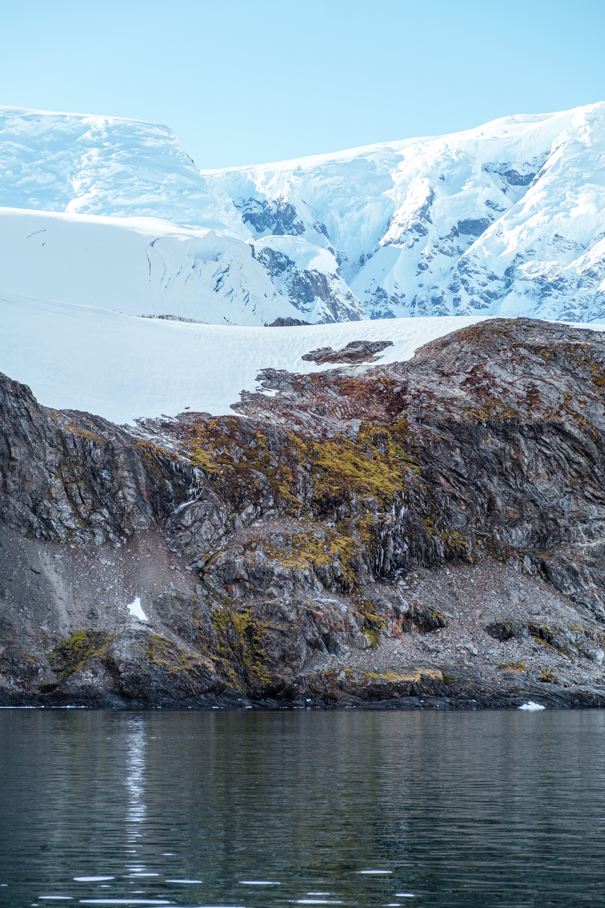

Science aboard the National Geographic Endurance
Antarctic Peninsula, South Georgia and Falkland Islands (February 2026)
Visual record of my journey aboard the National Geographic Endurance in February 2026, where I assisted with data collection for Dr. Amy Heim's project Bipolar Exploration of the Bryosphere. The study examines how climate change is reshaping moss-dominated ecosystems, and the microbial communities that sustain them, in polar regions where temperatures are rising twice as fast as anywhere else.
Notes from field notebook
Antarctica. The thrill of spotting patches of green among ice, rock and penguins. Mosses (along with a single flowering plant, Colobanthus quitensis) are among the few terrestrial primary producers on the continent (not to downplay phytoplankton, which drive primary production in this part of the world). The trick is to look for north-facing cliffs near penguin colonies, where nutrient-rich guano helps feed the moss.
South Georgia. A moss utopia. Plant diversity explodes here: milder temperatures turn the hillsides green, and a constantly dripping glacier keeps them wet.
Falkland Islands Islas Malvinas. Strong winds strip the hilltops bare, leaving boulders covered in white and orange lichen, irresistible to climb. At the base of the hills, small dry shrubs are the tallest plants around. Following the Land Rover track to the albatross colony, we found shelter from the wind among the tussock grass on the cliffs. Moss was harder to find here, perhaps because it is simply not moist enough.
